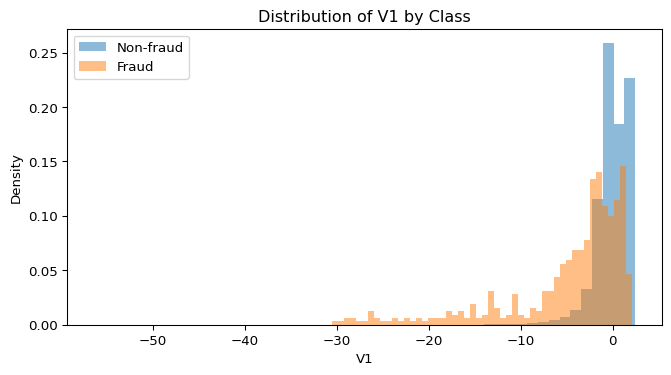
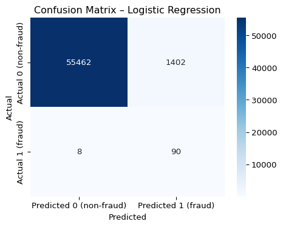
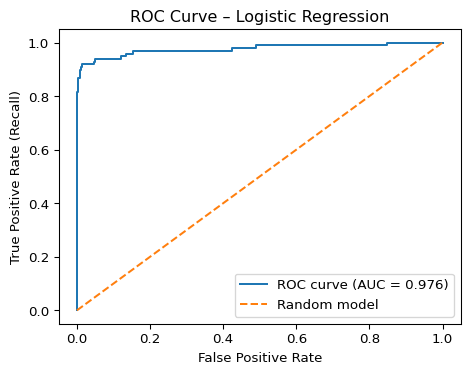
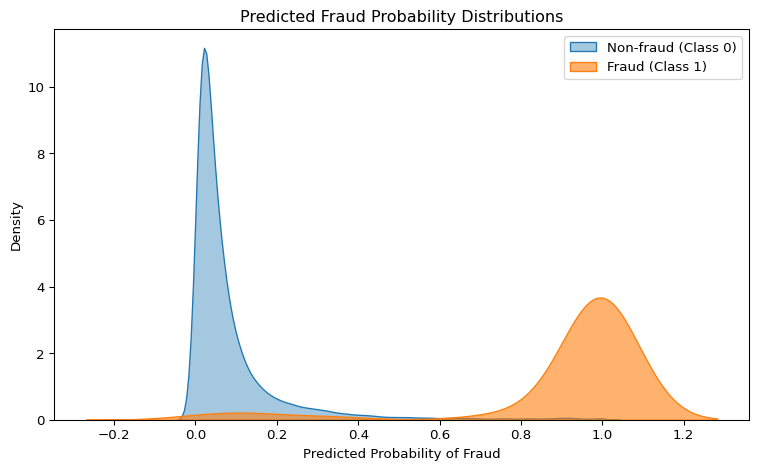

# Standard imports
import pandas as pd
import numpy as np
import matplotlib.pyplot as plt
import pyrsm as rsm
# Imports for ML
from imblearn.pipeline import Pipeline
from imblearn.under_sampling import RandomUnderSampler
from sklearn.preprocessing import StandardScaler
from sklearn.linear_model import LogisticRegression
from sklearn.metrics import (
classification_report,
confusion_matrix,
roc_auc_score,
precision_recall_curve,
average_precision_score
)Credit Card Fraud Exploration
Introduction
Data Set
Time
- Time since first transcation in seconds
- e.g. if
Time = 0that’s the first transaction & ifTime = 10,000then the transaction occured 10,000 seconds after the first one (~ almost 3 hours)
V1 - V28
- These come from principal component analysis (PCA) - they are linear combinations of raw features
- PCA is done to conserve privacy (we still get patterns relevant to fraud but not the original columns)
- there are a total of 28 components
- we cannot directly interpret them in business terms (e.g. credit score correlated with fraud) but we can still train models to see which features matter and which don’t
Problem
Problem with the data set is the heavy inbalance (few fraud cases). Even if a model has a high accuracy this is largely due to the imbalance which the small fraud class can hide behind.
Solution
Developed a logistic regression model that generates probabilistic risk scores, allowing the business to rank transactions by likelihood of fraud rather than just binary classification. To address the dataset’s severe class imbalance, I evaluated the model using a Precision-Recall (PR) Curve instead of a standard ROC curve. This approach isolates the minority (fraud) class performance, ensuring the model isn’t biased by the volume of non-fraud data. Ultimately, this framework empowers stakeholders to tune the decision threshold, dynamically optimizing for either Precision (minimizing false alarms) or Recall (catching maximum fraud) based on evolving business priorities.
Conclusion
Using Random_Under_Sampler in Sklearn I was able to create a more accurate logitistic regression which coudld handle the imabalance well. The model had a ROC AUC of 97% which means it categorised the transactions accurately, but the PR AUC was 64%. This is because as the model tries to catch more fraud, it’s precision goes down and more non-fraud transactions get incorrectly flagged.
Code
fraud = pd.read_csv("creditcard.csv")Exploring the Data (EDA anlaysis)
V1 split by class
tyring to see with the first PCA component, wether their is a correlation or not with fraud.
- code below splits the data set into fraud /non fraud
Class = 0and then looks at the length of each. Fraud is only0.17%which is extremley small / heavily imbalanced. - code then creates an overlayed histogram of the distributiouns of
V1by class (fraud / no fraud). We can see that non-fraud is clustered around 0 while fraud spreads much further to the left (large negative values)
v1_nonfraud = fraud[fraud["Class"] == 0]["V1"]
v1_fraud = fraud[fraud["Class"] == 1]["V1"]
plt.figure(figsize=(8,4))
plt.hist(v1_nonfraud, bins=50, alpha=0.5, density=True, label="Non-fraud")
plt.hist(v1_fraud, bins=50, alpha=0.5, density=True, label="Fraud")
plt.xlabel("V1")
plt.ylabel("Density")
plt.legend()
plt.title("Distribution of V1 by Class")
plt.show()
Correlation Matrix
Creating a correlation matrix by calling the df.corr() function, filtering for only Class & Time. Then we sort the values using ascending = False and use absolute value as the key. - V17 has the strongest correlation (big or small) compared to other PCA components (e.g. a corr of -0.32). - V17 values are the MOST negatively correlated with Class compared to other components - most PCA components tend to have a negative correlation with fraud. - Because the data is heavily inbalanced, a correlation of 0.3 with fraud is actually quite meaningful
# 1. Full correlation matrix
corr = fraud.corr()
# 2. Keep only correlations with Class and Time
ct = corr[["Class", "Time"]]
# 3. Filter rows where EITHER correlation is "large" (adjust threshold)
threshold = 0.2 # e.g. |corr| > 0.2
high_corr = ct[ct.abs().max(axis=1) > threshold]
# 4. Sort by strength of correlation with Class, then Time
high_corr.sort_values(by=["Class", "Time"], key=lambda x: x.abs(), ascending=False)| Class | Time | |
|---|---|---|
| Class | 1.000000 | -0.012323 |
| V17 | -0.326481 | -0.073297 |
| V14 | -0.302544 | -0.098757 |
| V12 | -0.260593 | 0.124348 |
| V10 | -0.216883 | 0.030617 |
| V3 | -0.192961 | -0.419618 |
| V11 | 0.154876 | -0.247689 |
| Time | -0.012323 | 1.000000 |
| V25 | 0.003308 | -0.233083 |
Logistic Regression
Now we are going to start modeling our data. We are going to start with logistic regression, which is similar to linear regression, but instead of predicting a numerical value, it predicts the probability of belonging to a class (e.g. normal vs fraudulent claims). We use it because Class is a binary variable. - Using sklearns training_test_split we create training and testing data from original X and y dataframes. - we use a standard 80/20 split (80% of the data for training & 20% for testing)
from sklearn.model_selection import train_test_split
X = fraud.drop(columns = "Class")
y = fraud["Class"]
X_train, X_test, y_train, y_test = train_test_split(
X,
y,
test_size=0.2,
stratify=y,
random_state= 166885560
)
rus = RandomUnderSampler(random_state=166885560)
X_train_under, y_train_under = rus.fit_resample(X_train, y_train)
pipe = Pipeline(steps=[
("scale", StandardScaler()),
("clf", LogisticRegression(max_iter=1000))
])
pipe.fit(X_train_under, y_train_under)
y_pred = pipe.predict(X_test)
y_proba = pipe.predict_proba(X_test)[:, 1]Evaluating the Data
- because the data is not linear and we are not evalauting against a line (hard classifications - either 0 or 1) we cannot use
RootMeanSquareErrorto evaluate our models.- with the current threshold, the model has a recall of 91%, meaning almost all of the fraudulent transactions were caught (90/98). It’s also consistently gives higher probabilities of fraud to real fradulent transcations 98% of the time (ROC AUC).
- Due to high recall, there is a high false positive rate, which is why precision is low (~6%) and why PR AUC, which is sensitive to false negatives, is only 64%
- The balance between recall/ precision is something that the bank mostly cares about.
- If the bank we are examining cares more about false positives because they are more costly to them than false postivies, they will want to keep the threshold low to keep the threshold high. The tradeoff will be customer disatisfaction to save money from unflagged fraud.
# 1) Basic classification metrics (includes precision, recall, F1)
print("Confusion matrix:")
print(confusion_matrix(y_test, y_pred))
print("\nClassification report (focus on Class 1 = fraud):")
print(classification_report(y_test, y_pred, digits=4)) # precision, recall, F1
# 2) ROC AUC
roc_auc = roc_auc_score(y_test, y_proba)
print(f"\nROC AUC: {roc_auc:.4f}")
# 3) Precision–Recall curve + PR AUC
precision, recall, thresholds = precision_recall_curve(y_test, y_proba)
pr_auc = average_precision_score(y_test, y_proba)
print(f"PR AUC (Average Precision): {pr_auc:.4f}")Confusion matrix:
[[55462 1402]
[ 8 90]]
Classification report (focus on Class 1 = fraud):
precision recall f1-score support
0 0.9999 0.9753 0.9874 56864
1 0.0603 0.9184 0.1132 98
accuracy 0.9752 56962
macro avg 0.5301 0.9469 0.5503 56962
weighted avg 0.9982 0.9752 0.9859 56962
ROC AUC: 0.9759
PR AUC (Average Precision): 0.6499Visualizations
Confusion Matrix
- we use a seaborn
heatmapafter calling skleanrnsconfusion_matrix– shows wehter classifications where correct or not across both positives and negatives – [[TN, FP], [FN, TP]] - top left is true negatives (TN) which shows ~55k legitimate transactions, which is way larger than the other cells because the data set is inbalanced and fraud is low to begin with. The next interesting cell is false positives (FP)in the top right (~1.4k), which is conveying why we has such low precision (~6% of flagged transactions are actually fraud)
- in bottom row (false negatives and true positives) we see that the transactions that where actually fraudulent (98 in total). We notice that we have pretty high recall (90/98 ~91%)
import seaborn as sns
cm = confusion_matrix(y_test, y_pred)
plt.figure(figsize=(5,4))
sns.heatmap(
cm,
annot=True,
fmt="d",
cmap="Blues",
xticklabels=["Predicted 0 (non-fraud)", "Predicted 1 (fraud)"],
yticklabels=["Actual 0 (non-fraud)", "Actual 1 (fraud)"]
)
plt.title("Confusion Matrix – Logistic Regression")
plt.ylabel("Actual")
plt.xlabel("Predicted")
plt.tight_layout()
plt.show()
ROC Curve
ROC curves the model the tradeoff between true positives (recall) and false positives. It’s L-shape shows that we can get good recall while keeping false positives relatively low. However, we have to keep in mind that fraud was rare to begin which gives more context to this curve because it models rates. This is why ROC curves are not the best at determining a models accuracy when a data set is imbalanced.
from sklearn.metrics import roc_curve, roc_auc_score
import matplotlib.pyplot as plt
fpr, tpr, thresholds = roc_curve(y_test, y_proba)
roc_auc = roc_auc_score(y_test, y_proba)
plt.figure(figsize=(5,4))
plt.plot(fpr, tpr, label=f"ROC curve (AUC = {roc_auc:.3f})")
plt.plot([0, 1], [0, 1], linestyle="--", label="Random model")
plt.xlabel("False Positive Rate")
plt.ylabel("True Positive Rate (Recall)")
plt.title("ROC Curve – Logistic Regression")
plt.legend()
plt.tight_layout()
plt.show()
PR Curve
PR curves show the tradeoff between precision and recall across all thresholds. The tradeoff is more evident here: as we increase recall, we reduce our precision. There are short drop offs in precision at 20% recall and shortly after 80%.
from sklearn.metrics import precision_recall_curve, average_precision_score
precision, recall, pr_thresholds = precision_recall_curve(y_test, y_proba)
pr_auc = average_precision_score(y_test, y_proba)
plt.figure(figsize=(5,4))
plt.plot(recall, precision, label=f"PR curve (AP = {pr_auc:.3f})")
plt.xlabel("Recall")
plt.ylabel("Precision")
plt.title("Precision–Recall Curve – Logistic Regression")
plt.legend()
plt.tight_layout()
plt.show()
Predicted Probability Distributions
The PPD plot shows how our logistic regression model assigns fraud probabilities to each transaction, split by actual class. Key Observations: * Class 0 (Non-Fraud): Concentrated near 0 but features a “long right tail.” Because Class 0 is the majority, this tail captures many transactions, directly causing our False Positives. * Class 1 (Fraud): Distinctly right-shifted, validating the model’s high ROC AUC and ability to rank risk effectively. * Implication: The overlap between the Class 0 tail and the Class 1 spread explains the model’s High Recall / Low Precision dynamic.
proba_df = pd.DataFrame({
"prob": y_proba,
"Class": y_test.values
})
plt.figure(figsize=(8,5))
sns.kdeplot(
data=proba_df[proba_df["Class"] == 0]["prob"],
fill=True, alpha=0.4, label="Non-fraud (Class 0)"
)
sns.kdeplot(
data=proba_df[proba_df["Class"] == 1]["prob"],
fill=True, alpha=0.6, label="Fraud (Class 1)"
)
plt.title("Predicted Fraud Probability Distributions")
plt.xlabel("Predicted Probability of Fraud")
plt.ylabel("Density")
plt.legend()
plt.tight_layout()
plt.show()